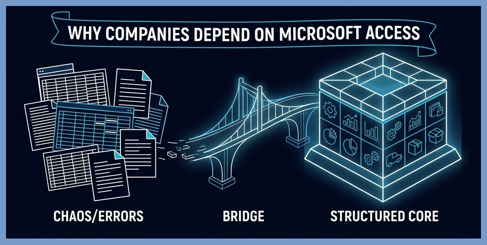

Why Companies Still Depend on Microsoft Access to Run Core Operations
Despite the rise of cloud-based platforms and SaaS subscriptions, Microsoft Access remains a foundational tool for thousands of businesses across the globe. From tracking inventory, warehouse stock, and fleet repairs to managing HR records, order fulfillment, and daily expense accounting, Access continues to power critical day-to-day operations.

The ongoing reliance on Access comes down to a few practical business factors:
Unmatched Customization: Off-the-shelf software often requires companies to change their established processes. Access applications are tailored precisely to a business's unique rules and workflows.
Cost-Effective Efficiency: Built directly into Microsoft 365 packages, Access eliminates the need for expensive per-user monthly SaaS licenses.
Rapid Data Entry: Desktop interfaces offer keyboard shortcuts, rapid form submission, and immediate sub-report generation that web-based interfaces often struggle to match in speed.
Relational Integrity: It bridges the gap between basic spreadsheets and full-scale enterprise software, enforcing relational data rules that prevent human error.
Modernizing Without Replacing
For growing businesses, the path forward isn't always throwing away a 15-year-old Access application. By splitting the application—retaining the familiar Access front-end for data entry while migrating the backend tables to Microsoft SQL Server or MySQL—companies achieve enterprise-grade security, handling millions of records without database corruption or downtime.
In database architecture, performance and reliability matter most. Keeping an Access system running and properly optimized is often the smartest, most cost-effective decision a company can make.
Looking to optimize or modernize your MS Access system? DataCore Systems specializes in Access database optimization, SQL Server backend migrations, and custom enterprise software architectures.
Get in Touch